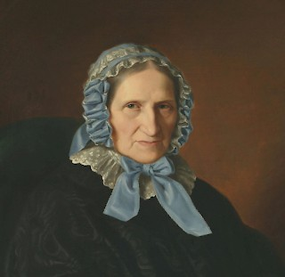

Die weiblichen Familienmitglieder Heines waren mit die wichtigsten Personen in seinem Leben. Sie waren seine Stütze und Inspiration, auch manche seiner Werke beziehen sich auf sie. Zu ihnen hatte er ein sehr enges und vertrautes Verhältnis, was für ihn Lebensenergie und Motivation bedeutete. Trotz ihrer Kritik an seinem Beruf als Dichter und an seinen Werken, unterstützen sie Heinrich Heine bis zu seinem Tod, bzw. kümmerten sich um sein Werk und Andenken, auch nachdem er
Von Harumi Miyazoto